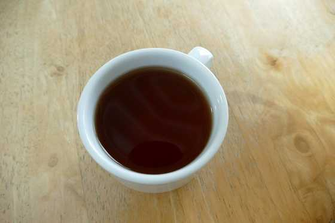
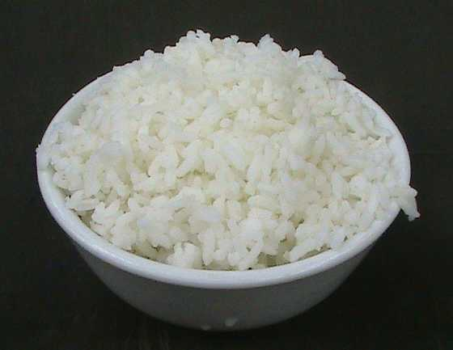
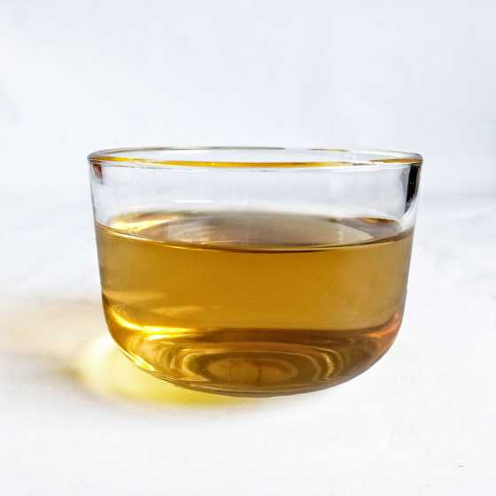
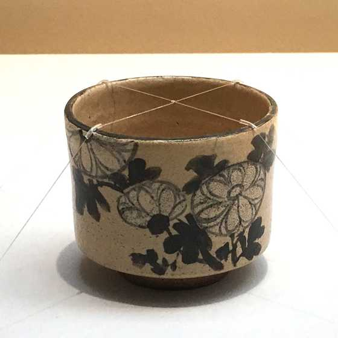
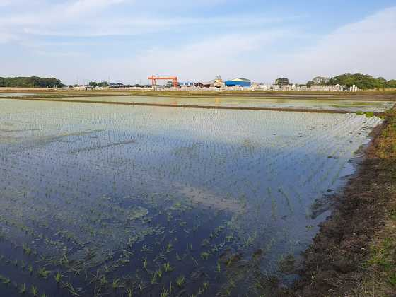
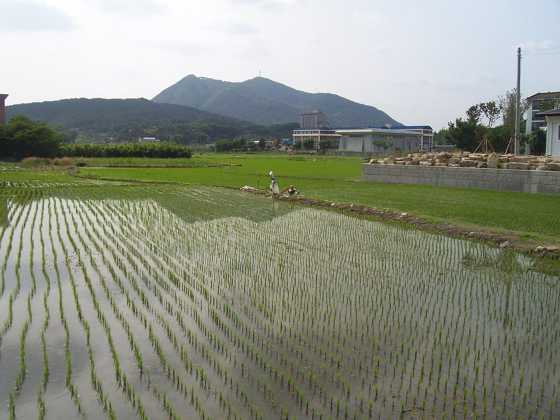

お店について
ABOUT
糀 cafe Spoon は、Instagramのプロフィールで「糀を使った体に優しいごはん」と紹介されている、長野県茅野市のカフェです。グルテンフリーをうたい、糀を使ったごはん、米粉のお菓子、自家製甘酒を楽しめると案内されています。
お弁当の予約受付、貸し切り、クリスマス予約などもInstagramで案内されています。
店名「Spoon」の由来は確認できていません。このページの「ひとさじ」というコンセプトは、制作側のイメージです。

KOJI CAFE ・ 長野県茅野市
ひとさじの糀で、からだにやさしい一日を。
ABOUT
糀 cafe Spoon は、Instagramのプロフィールで「糀を使った体に優しいごはん」と紹介されている、長野県茅野市のカフェです。グルテンフリーをうたい、糀を使ったごはん、米粉のお菓子、自家製甘酒を楽しめると案内されています。
お弁当の予約受付、貸し切り、クリスマス予約などもInstagramで案内されています。
店名「Spoon」の由来は確認できていません。このページの「ひとさじ」というコンセプトは、制作側のイメージです。
MENU

糀を使った、体に優しいごはん。お弁当のご予約も承っているとInstagramに記載があります。

グルテンフリーをうたう、米粉のお菓子。内容はInstagramでご確認ください。

自家製の甘酒をはじめとするドリンクがあると紹介されています。
VOICE
やさしい味のごはんで、食べたあとも体が軽く感じました。甘酒もほっとする味でした。
米粉のお菓子がしっとりしていて、グルテンを気にしている友人とも一緒に楽しめました。
お弁当を予約してお出かけに持っていきました。糀のごはんで、いつもより穏やかな一日になりました。
上記は制作側が作成したイメージ例であり、実際のお客様の声ではありません。








掲載写真はフリー素材のイメージです。店舗の実際の様子・料理ではありません。他地域で撮影されたものを含みます。
ACCESS
CREDITS
写真はWikimedia Commonsのフリー素材で、縮小・切り抜きなどの加工をしています。